The whole design story, start to today
Hi Lea. Here is everything.
You asked good questions, and you deserve full answers. This page shows every design step so far, the choices we looked at, and why each decision was made. Nothing is hidden and nothing is final without you and your mom.
The short version:
- Your white logo disappears on the light wall, so we put a green panel behind it.
- The tagline letters would be too small to read from across the street, so the tagline got its own sign on the corner.
- Your mom picked the sign placements, the 3030 color, and the version without the triangle. You will see all the options she chose from below.
- Nothing needs to be redesigned. I only need the original logo files so what I paint matches your brand exactly.
Read it all, or skip to the end for the three files I need. And if you see anything you would change, tell me. You know this brand better than anyone.
Where we started
A white logo on a light wall
Your logo is white. The upper wall on West Cary Street is painted a light gray. White on light gray is almost the same brightness, so from the sidewalk the letters would nearly vanish.
This is not a guess. We measured it. Here is the white version on the real wall, using the 3030 address as the test:
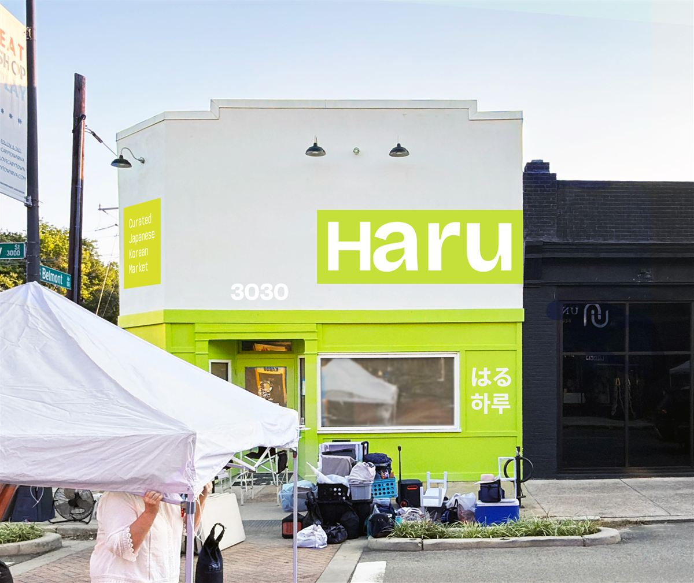
How we measure it
Sign makers score how much letters stand out with a contrast number. Higher is easier to read. Black on white scores about 21, the best possible.
White letters on this wall score about 1.3. That is close to invisible. No amount of skill in the painting fixes that number.
The fix
A green panel behind the white letters
We did not want to change your logo. The letters stay white, exactly as designed. Instead we paint a panel of Haru's own green behind them. The green block is easy to spot from far away, and the white letters read against the green.
Honest note: white on green is still not the strongest contrast on paper. But it keeps your brand colors, it makes the sign easy to find, and at the size these letters will be painted it reads well. It is a big step up from invisible.
Your suggestion
About outlining the letters
You suggested a thin dark outline around the white letters, so they could sit right on the wall. That is a real sign painter technique, and it was worth looking at. Here is why it does not solve this problem:
Thin lines disappear with distance. For a line to still be visible from 50 feet away, it has to be painted about an inch thick. A truly thin outline stops existing to the eye from across the street, and then we are back to white on light gray.
A thick outline changes your logo. If we paint the outline heavy enough to work, the sign becomes an outlined logo. That is a different look from the clean logo your designer made.
It costs real money. Hand painting a clean outline around every curve of every letter is some of the slowest, most focused brushwork there is. It would add many hours of labor to fix a problem the green panel already fixes.
So the outline is possible, but it buys less readability than the panel at a much higher price. If you want to see a mockup of it anyway, say the word and I will make one. It is your family's building.
Your biggest question
Why the tagline has its own sign
You asked why we split "Curated Japanese & Korean Market" away from the name. It is not a style choice. It is arithmetic about reading distance.
The rule sign painters use
A letter needs about 1 inch of height for every 10 feet a person stands away from it.
The main sign sits about 15 feet up and gets read from 40 to 60 feet away, from the far sidewalk and the crosswalks. At that distance, letters need to be 5 to 6 inches tall to read comfortably.
Inside the big sign, the tagline letters would come out around 2 to 3 inches tall. From across the street they would be a blurry line under the name. Money spent on words nobody can read.
So the tagline moved to its own sign on the corner of the building, where the two streets meet. There it gets letters big enough to actually read, and everyone walking up Cary or Belmont sees it.
Your mom picked the size and colors from six options:
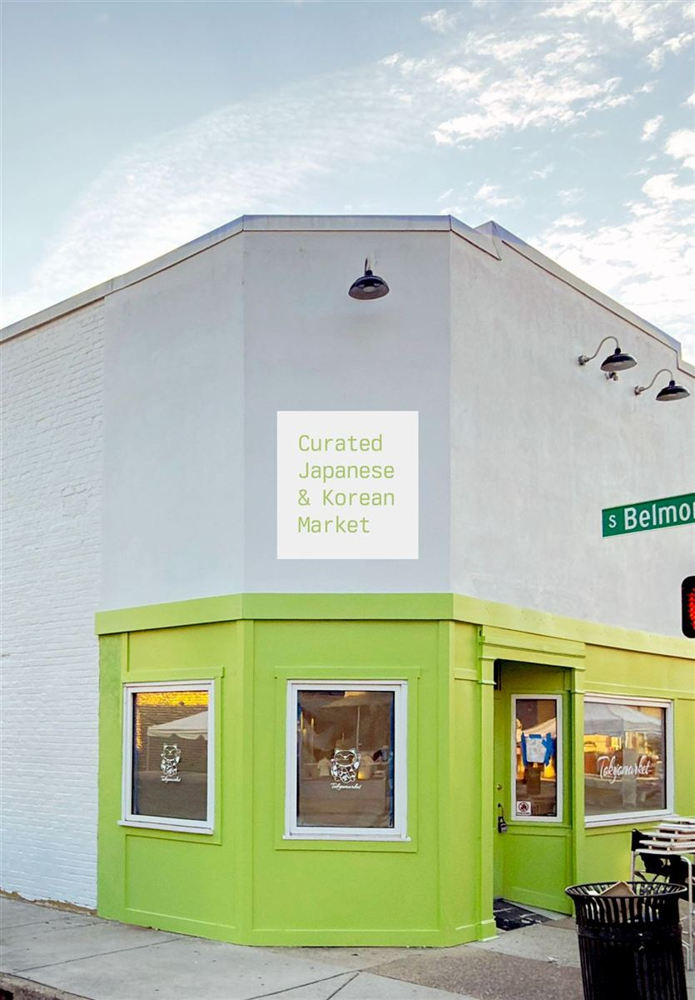
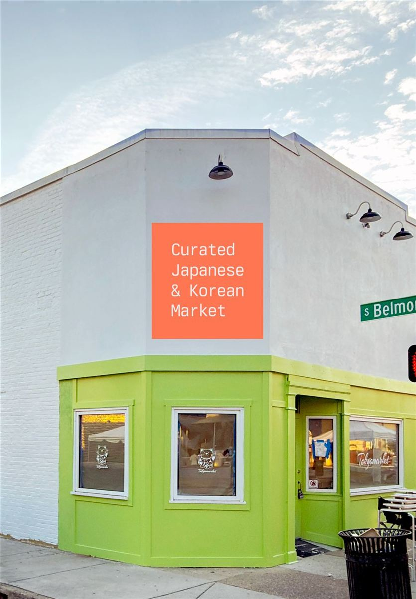
She also asked us to remove the "&" and line the words up on the left, so the corner sign now reads Curated / Japanese / Korean / Market on four clean lines.
Another real decision
With the triangle, or without
We mocked up the front both ways and showed every version. Your mom chose the clean wordmark without the triangle for the big sign. Here is what she compared:
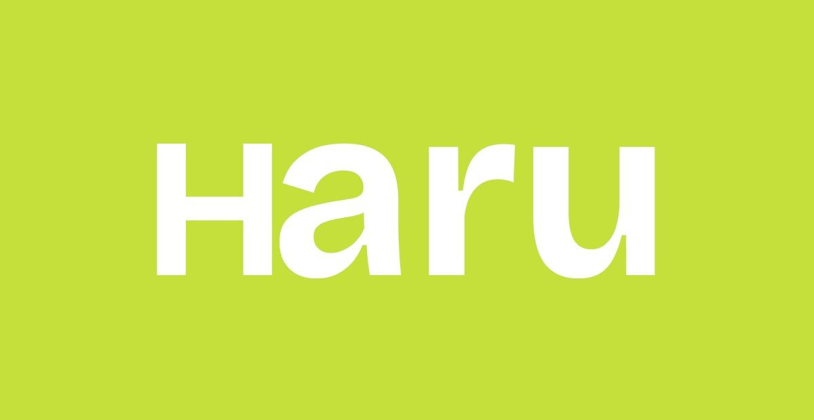
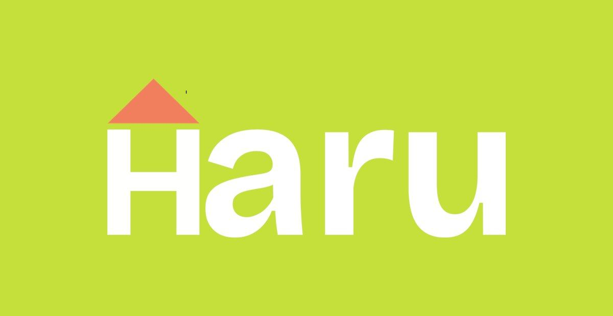
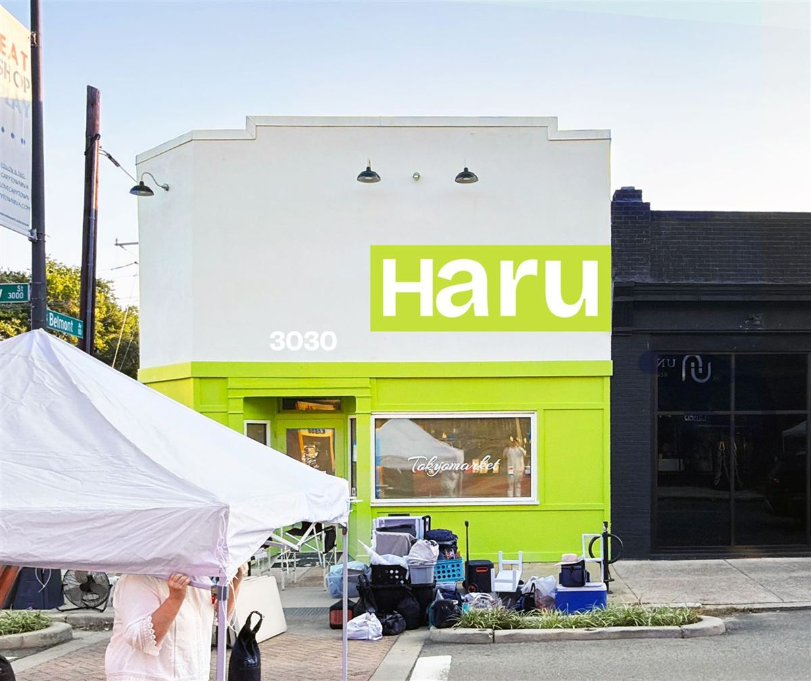
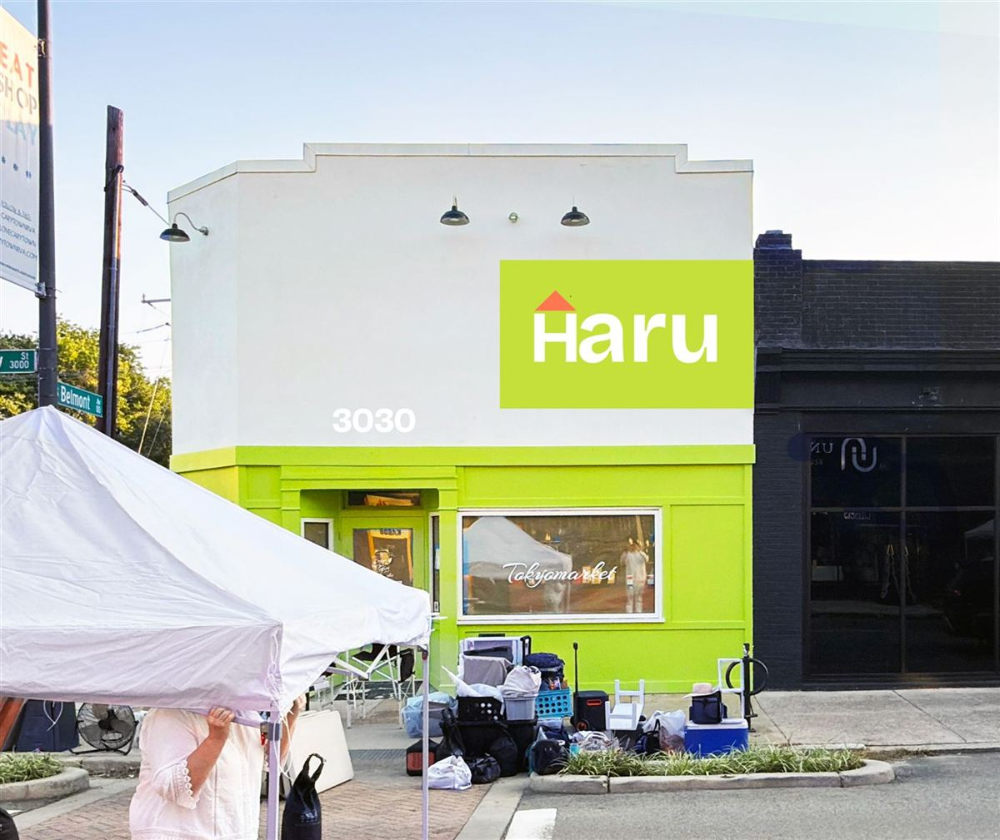
She saw six front layouts in total: three without the triangle, three with it, in different sizes and positions. The triangle is not gone from the brand. It is just not on the big wall sign.
The address
The 3030 over the door
The address number is planned right where you want it, by the door. We tested four colors on the real wall and measured each one:
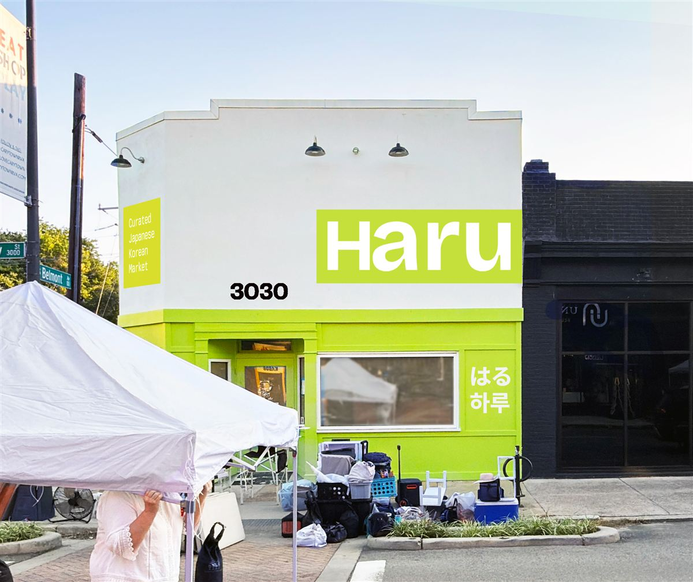
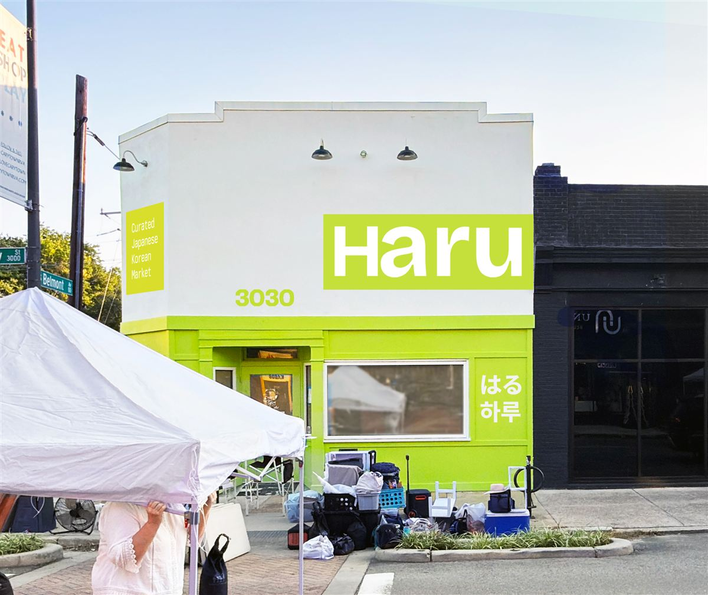
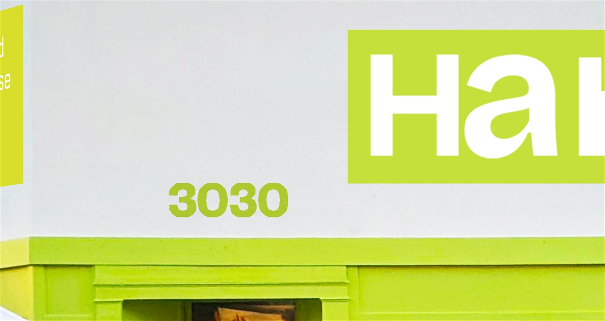
By the window
HARU in Japanese and Korean
Your mom asked for Haru written in Japanese and Korean, so we added both near the window on the green wall: はる and 하루. She confirmed the characters are correct before anything else moved forward, and she picked how they sit on the wall:

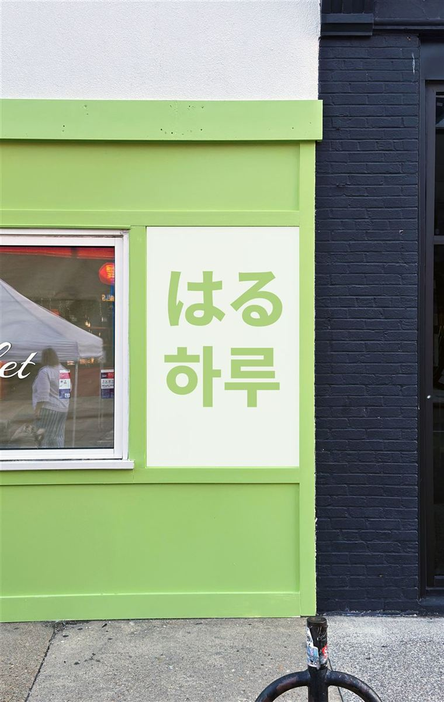
A small detail we sweat
Your mom drew us a J
On the corner sign, your mom felt the capital J in "Japanese" did not look balanced. She drew the shape she wanted on paper and texted it to me. So I redrew that one letter by hand to match her drawing, and left every other letter exactly as it was.
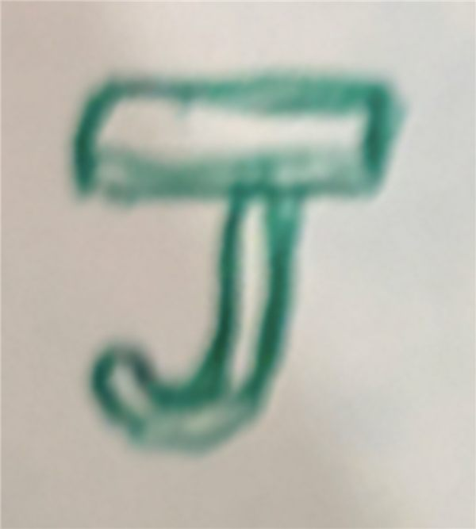
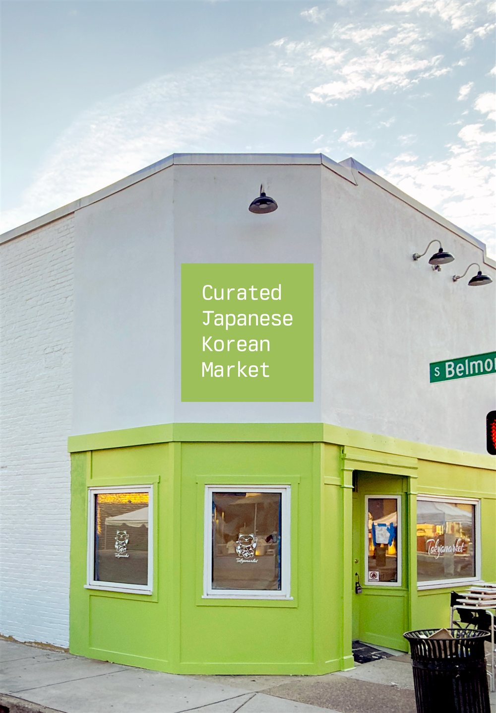
Still to come
The Belmont side, and finishing
The side wall on South Belmont Avenue is planned last, on purpose. Once the front wall and the corner are locked, the Belmont side gets designed to match them, so the whole building agrees with itself from every direction.
After that you and your mom get one final set of pictures showing everything together: the front, the corner, the 3030, the window characters, and the Belmont side. Nothing gets painted until you have seen the whole building and said yes.
How you can move this forward
Three files, and we are off
You asked what needs to be redesigned. The honest answer is nothing. Every decision above is made or nearly made. What I am missing is the original artwork, so the letters I paint are your designer's exact letters instead of my careful rebuild from photos.
Your designer does not need to design anything new. Exporting these takes a few minutes:
What to send me
Email works best: hello@untitledmixedmedia.com
And if you look at all of this and want the logo handled differently, that is a real option too. Tell me what you want changed and I will mock it up so you can see it before anything is painted.
Where the schedule stands
Being straight with you, because the deadline is close: the deposit has not come in yet, so Haru is not on my work calendar. Right now I do all of this design work in the gaps between my scheduled jobs.
The day the deposit arrives, that flips. Haru becomes my main job and gets my full attention, every day, until the building is done. With opening day this close, that switch is the single biggest thing that speeds this up.
Your turn
Tell me what you think
You care about this brand, and that is exactly what this project needs. Look through everything above. If something feels wrong, I want to hear it now, while it is still paint on a screen instead of paint on a wall.